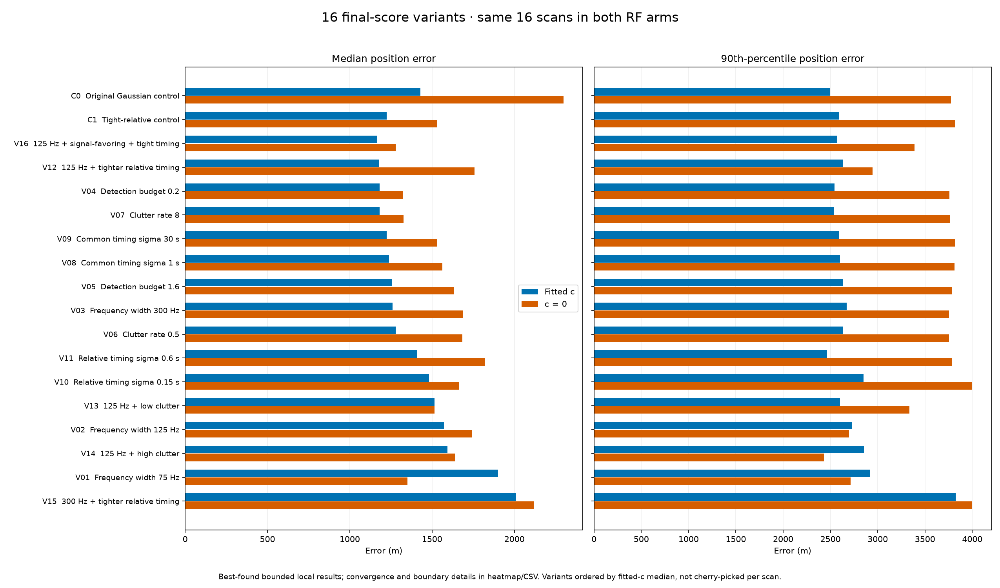
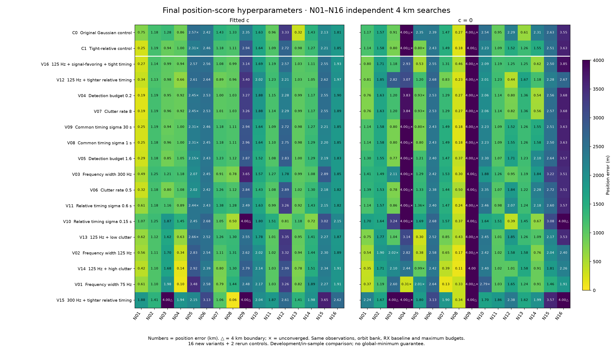
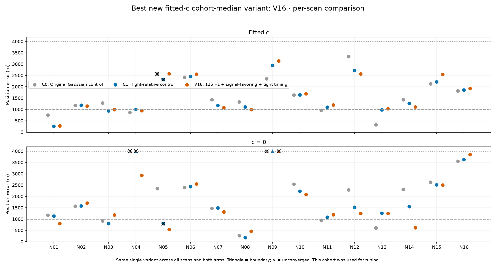

Sixteen final-score variants, two controls, frozen full-data N01--N16 inputs. All scans independent. Same associated top-one windows, ephemerides, RX baseline, satellite bank, hard bounds, seed pools and maximum search budgets in both RF arms. This is in-sample development with known-roof upstream calibration, not validation. Select positions by each objective, never by position error. Do not compare raw NLL across different likelihood hyperparameters as localization evidence.
512 new-variant fits + 64 matched control fits. Score parameters were fixed before fitting. All fits use full associated-window inputs; no held-out rows. Detection budget is an expected-count budget, so 1.6 is allowed when its per-satellite probability remains below one.
Convergence continuation: every case offered up to 20 s SLSQP + 10 s Fisher, stopping early at KKT ≤ 0.001. No new starts or model changes. Unconverged cases remain marked.
| mode | sigma_hz | detection_budget | clutter_rate | common_sigma_s | relative_sigma_s |
|---|---|---|---|---|---|
| C0 | 200.0 | 0.8 | 2.0 | 10.0 | 1.0 |
| C1 | 200.0 | 0.8 | 2.0 | 10.0 | 0.333 |
| V01 | 75.0 | 0.8 | 2.0 | 10.0 | 0.333 |
| V02 | 125.0 | 0.8 | 2.0 | 10.0 | 0.333 |
| V03 | 300.0 | 0.8 | 2.0 | 10.0 | 0.333 |
| V04 | 200.0 | 0.2 | 2.0 | 10.0 | 0.333 |
| V05 | 200.0 | 1.6 | 2.0 | 10.0 | 0.333 |
| V06 | 200.0 | 0.8 | 0.5 | 10.0 | 0.333 |
| V07 | 200.0 | 0.8 | 8.0 | 10.0 | 0.333 |
| V08 | 200.0 | 0.8 | 2.0 | 1.0 | 0.333 |
| V09 | 200.0 | 0.8 | 2.0 | 30.0 | 0.333 |
| V10 | 200.0 | 0.8 | 2.0 | 10.0 | 0.15 |
| V11 | 200.0 | 0.8 | 2.0 | 10.0 | 0.6 |
| V12 | 125.0 | 0.8 | 2.0 | 10.0 | 0.15 |
| V13 | 125.0 | 0.8 | 0.5 | 10.0 | 0.333 |
| V14 | 125.0 | 0.8 | 8.0 | 10.0 | 0.333 |
| V15 | 300.0 | 0.8 | 2.0 | 10.0 | 0.15 |
| V16 | 125.0 | 1.6 | 0.5 | 3.0 | 0.15 |



| arm | mode | median_error_m | mean_error_m | p90_error_m | below_1km | converged | boundary | improved_vs_C1 | worsened_vs_C1 |
|---|---|---|---|---|---|---|---|---|---|
| fitted-c | C0 | 1430.042 | 1611.397 | 2494.552 | 4 | 15 | 0 | 9 | 7 |
| fitted-c | C1 | 1225.368 | 1571.05 | 2588.697 | 3 | 15 | 0 | 0 | 0 |
| fitted-c | V01 | 1901.69 | 1745.786 | 2921.511 | 4 | 16 | 0 | 6 | 10 |
| fitted-c | V02 | 1571.492 | 1690.646 | 2728.116 | 3 | 16 | 0 | 6 | 10 |
| fitted-c | V03 | 1260.903 | 1588.606 | 2670.256 | 4 | 16 | 0 | 8 | 8 |
| fitted-c | V04 | 1180.863 | 1591.156 | 2542.734 | 4 | 15 | 0 | 6 | 10 |
| fitted-c | V05 | 1256.982 | 1557.556 | 2630.539 | 3 | 15 | 0 | 9 | 7 |
| fitted-c | V06 | 1278.874 | 1546.969 | 2628.679 | 2 | 16 | 0 | 9 | 7 |
| fitted-c | V07 | 1181.998 | 1591.072 | 2539.452 | 4 | 15 | 0 | 6 | 10 |
| fitted-c | V08 | 1238.289 | 1575.614 | 2599.994 | 3 | 15 | 0 | 4 | 6 |
| fitted-c | V09 | 1225.252 | 1571.006 | 2588.596 | 3 | 15 | 0 | 0 | 0 |
| fitted-c | V10 | 1480.865 | 1719.158 | 2850.221 | 3 | 16 | 1 | 4 | 12 |
| fitted-c | V11 | 1407.2 | 1628.86 | 2464.98 | 4 | 15 | 0 | 9 | 7 |
| fitted-c | V12 | 1178.925 | 1608.926 | 2629.884 | 5 | 16 | 0 | 6 | 10 |
| fitted-c | V13 | 1515.902 | 1682.108 | 2601.77 | 3 | 15 | 0 | 5 | 11 |
| fitted-c | V14 | 1592.632 | 1640.084 | 2854.872 | 4 | 16 | 0 | 7 | 9 |
| fitted-c | V15 | 2010.579 | 2239.977 | 3825.162 | 1 | 16 | 2 | 4 | 12 |
| fitted-c | V16 | 1166.723 | 1608.838 | 2570.269 | 4 | 16 | 0 | 6 | 10 |
| zero-c | C0 | 2297.776 | 2063.361 | 3775.909 | 4 | 14 | 2 | 6 | 8 |
| zero-c | C1 | 1530.895 | 1887.068 | 3815.137 | 3 | 14 | 2 | 0 | 0 |
| zero-c | V01 | 1349.602 | 1535.356 | 2714.876 | 5 | 12 | 1 | 9 | 6 |
| zero-c | V02 | 1742.138 | 1679.383 | 2695.321 | 5 | 14 | 1 | 9 | 6 |
| zero-c | V03 | 1687.66 | 2026.621 | 3754.819 | 2 | 15 | 2 | 6 | 8 |
| zero-c | V04 | 1324.938 | 1786.775 | 3759.273 | 5 | 14 | 1 | 6 | 9 |
| zero-c | V05 | 1631.509 | 1981.178 | 3783.493 | 2 | 14 | 2 | 7 | 7 |
| zero-c | V06 | 1683.82 | 2020.807 | 3753.572 | 2 | 15 | 2 | 7 | 7 |
| zero-c | V07 | 1325.947 | 1788.93 | 3761.717 | 5 | 14 | 1 | 6 | 9 |
| zero-c | V08 | 1563.262 | 1889.723 | 3813.76 | 3 | 14 | 2 | 5 | 6 |
| zero-c | V09 | 1530.594 | 1887.045 | 3815.149 | 3 | 13 | 2 | 0 | 0 |
| zero-c | V10 | 1665.323 | 2101.763 | 4000.0 | 3 | 15 | 3 | 3 | 11 |
| zero-c | V11 | 1820.336 | 2009.54 | 3784.371 | 3 | 13 | 2 | 6 | 8 |
| zero-c | V12 | 1757.929 | 1809.952 | 2946.748 | 4 | 15 | 1 | 8 | 7 |
| zero-c | V13 | 1515.552 | 1759.508 | 3333.835 | 4 | 15 | 1 | 8 | 7 |
| zero-c | V14 | 1640.651 | 1593.62 | 2429.683 | 5 | 15 | 0 | 11 | 5 |
| zero-c | V15 | 2119.034 | 2513.934 | 4000.0 | 1 | 15 | 4 | 1 | 13 |
| zero-c | V16 | 1279.878 | 1762.88 | 3390.96 | 4 | 15 | 1 | 9 | 6 |
Posterior RMS changes its effective weights with the model. Owner RMS retains original owners and rows. Raw NLL is not comparable across different sigma/detection/clutter assumptions. Common-reference NLL evaluates each returned parameter vector under C1 without refitting; it is a diagnostic, not a selection criterion.
| arm | mode | median_owner_rms_hz | median_posterior_rms_hz | mean_signal_posterior | common_reference_data_nll |
|---|---|---|---|---|---|
| fitted-c | C0 | 116.106 | 98.74 | 0.851 | 529710.379 |
| fitted-c | C1 | 390.78 | 98.038 | 0.844 | 530408.54 |
| fitted-c | V01 | 403.423 | 73.511 | 0.842 | 530542.194 |
| fitted-c | V02 | 393.901 | 86.895 | 0.863 | 530539.958 |
| fitted-c | V03 | 436.942 | 119.278 | 0.803 | 530563.027 |
| fitted-c | V04 | 437.629 | 96.24 | 0.591 | 530479.022 |
| fitted-c | V05 | 390.726 | 98.89 | 0.91 | 530405.634 |
| fitted-c | V06 | 390.733 | 100.022 | 0.945 | 530408.144 |
| fitted-c | V07 | 437.604 | 96.262 | 0.596 | 530477.556 |
| fitted-c | V08 | 390.766 | 98.035 | 0.844 | 530408.304 |
| fitted-c | V09 | 390.78 | 98.038 | 0.844 | 530408.539 |
| fitted-c | V10 | 443.976 | 101.556 | 0.841 | 530878.889 |
| fitted-c | V11 | 390.317 | 97.828 | 0.846 | 530189.408 |
| fitted-c | V12 | 439.29 | 88.368 | 0.862 | 530583.481 |
| fitted-c | V13 | 391.356 | 90.083 | 0.948 | 530243.361 |
| fitted-c | V14 | 398.847 | 80.479 | 0.656 | 530572.562 |
| fitted-c | V15 | 481.047 | 131.647 | 0.797 | 532046.367 |
| fitted-c | V16 | 438.702 | 92.819 | 0.963 | 530507.562 |
| zero-c | C0 | 179.019 | 152.104 | 0.813 | 536410.012 |
| zero-c | C1 | 437.596 | 152.313 | 0.803 | 537321.05 |
| zero-c | V01 | 222.893 | 83.727 | 0.709 | 538337.251 |
| zero-c | V02 | 448.246 | 115.35 | 0.775 | 537849.957 |
| zero-c | V03 | 464.705 | 173.54 | 0.784 | 537568.102 |
| zero-c | V04 | 467.396 | 137.034 | 0.541 | 537524.401 |
| zero-c | V05 | 435.398 | 158.147 | 0.881 | 537326.271 |
| zero-c | V06 | 434.442 | 162.09 | 0.929 | 537015.111 |
| zero-c | V07 | 467.353 | 137.242 | 0.546 | 537501.581 |
| zero-c | V08 | 437.578 | 152.312 | 0.803 | 537320.693 |
| zero-c | V09 | 437.596 | 152.313 | 0.803 | 537321.053 |
| zero-c | V10 | 472.862 | 154.319 | 0.797 | 537955.71 |
| zero-c | V11 | 191.99 | 152.121 | 0.807 | 536902.856 |
| zero-c | V12 | 472.455 | 115.397 | 0.77 | 538199.798 |
| zero-c | V13 | 443.957 | 131.389 | 0.885 | 537153.738 |
| zero-c | V14 | 451.0 | 100.707 | 0.568 | 538215.836 |
| zero-c | V15 | 513.399 | 182.996 | 0.777 | 538819.844 |
| zero-c | V16 | 467.816 | 138.419 | 0.911 | 537545.53 |